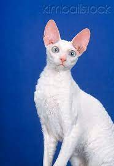

|  |
| CornishRex |
BEHAVIOR
Cornish Rex cats have a mischievous side to their character and a personality that can almost be described as forever young! Rexes are very intelligent, enjoy playing and love to learn new tricks. They will happily play fetching games for hours on end. While they are lively cats, they do have quieter times when they are happy to curl up in a lap. Cornish Rex cats can become cold quickly and will always seek out the warmest place to sleep.
GROOMING
The Cornish Rex cat's wavy coat needs the minimum amount of care. Rubber brushes may be used to help remove dead hair, but caution should be exercised as excess use may permanently damage the hair. Cats with pale coats may need sun block on ears in the summer months. As with all cats, regular vaccination and parasite control is recommended.
HEALTH PROBLEMS
One condition linked to the breed is hypotrichosis – hair loss leading to baldness. The unusual coat predisposes the cat to certain skin conditions including excessive yeast infection.
NUTRITION
Every cat is unique and each has their own particular likes, dislikes, and needs when it comes to food. However, cats are carnivores and every cat must obtain 41 different and specific nutrients from their food. The proportion of these nutrients will vary depending on age, lifestyle and overall health, so it's not surprising that a growing, energetic kitten needs a different balance of nutrients in her diet than a less active senior cat. Other considerations to bear in mind are feeding the right quantity of food to maintain 'ideal body condition' in accordance with feeding guidelines and catering to individual preference regarding wet or dry food recipes.